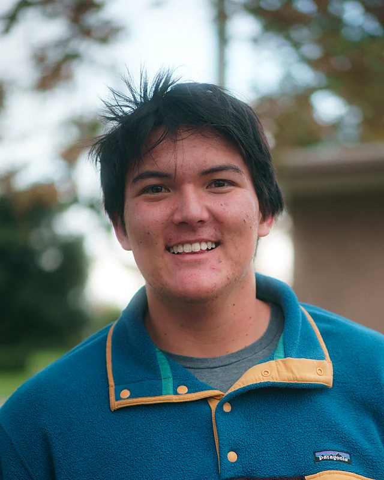
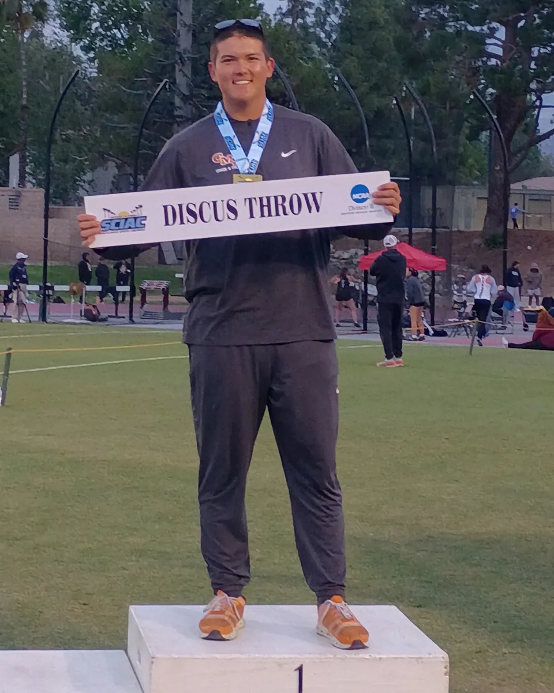
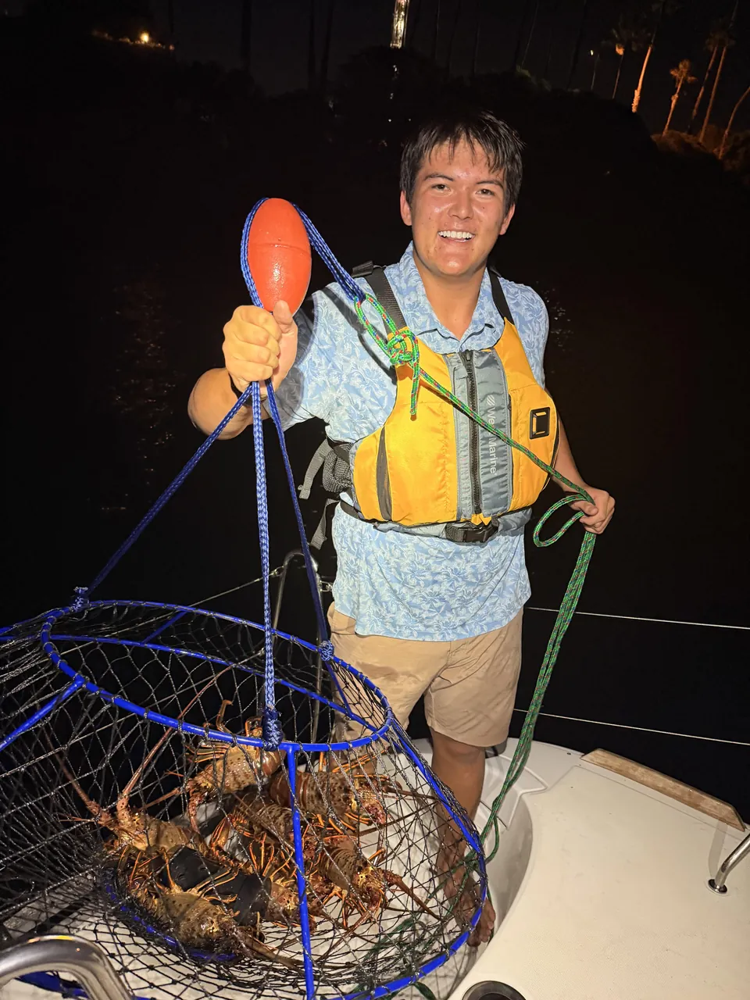

About

I'm an engineering student at Harvey Mudd College, from Huntington Beach, California, and I like making things. My favorite part of any project is getting the part in my hands: modeling it in SolidWorks, printing or machining it, then fixing whatever doesn't fit yet.
For me, engineering is about impact. I want what I build to make a real difference for the person using it, and that's what draws me to mechanical and biomedical engineering.
Throwing

I throw discus and shot put as an NCAA Division III athlete. My first season at Mudd, I won the SCIAC discus title and was named SCIAC Track & Field Newcomer of the Year and USTFCCCA First Team All-West Region in discus. I'm eager to see how much more I can improve.
Exploring

When I'm not in school, I love to travel and explore. Road trips have taken me to 49 national parks and 44 states. Growing up in Huntington Beach, I've always been around the water, and I spend as much time as I can at the beach, kayaking, and lobster fishing.
Contact
The best way to reach me is jxpaav@gmail.com.